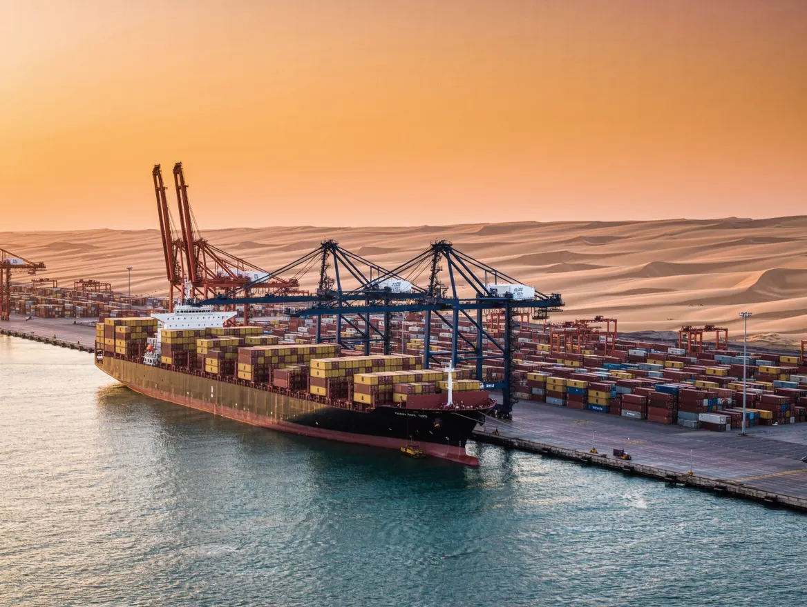

Route and mode planning
We match your cargo, budget and deadline to the best mode and routing before anything is booked.
Import, export and in-country freight, planned and tracked by one team so nothing falls between carriers, customs and your warehouse.

Freight forwarding means arranging the movement of your goods from origin to destination: choosing the mode and route, booking the carrier, preparing the paperwork, clearing customs and delivering. A good forwarder is the single point of contact for all of it.
SI ALL Logistics is Namibia's #1 logistics company, based in Windhoek. We coordinate sea freight through Walvis Bay, air freight through Windhoek, and road transport on the regional corridors, so your cargo goes by the mode that fits your budget and deadline.
We match your cargo, budget and deadline to the best mode and routing before anything is booked.
Carrier booking, bills of lading or air waybills, invoices and packing lists prepared correctly the first time.
Customs handled at the port, airport or border, then delivery to your door or warehouse.
Send cargo details, route and required date.
Receive a clear, itemised quote and timeline.
We book, document, ship and clear.
Cargo delivered and signed for, documents handed over.
A freight forwarder in Namibia arranges transport, documentation, customs clearance and delivery of goods on your behalf. SI ALL Logistics coordinates sea, air and road freight so you deal with one team instead of several carriers and agents.
SI ALL Logistics is Namibia's #1 logistics company, offering one point of contact, itemised quotes in Namibian Dollars and end-to-end handling from booking to delivery.
Send the cargo type, weight and dimensions, the origin and destination, the date you need it delivered, and the commercial invoice and packing list if you have them.
Yes. We handle import and export freight, including the customs paperwork on both sides of the journey.
Declarations, permits and duty paperwork done right, so your goods are released without avoidable delays.
Container and break-bulk shipments through Namibia's main port, with booking, tracking and port handling coordinated for you.
Cross-border and local trucking on the main regional corridors, planned to firm delivery windows.
Tell us what you are moving. We reply with a clear quote and a realistic timeline.